Yunspire Studio · Tasty Sam · Settings Rework
把原本「单列长滚动 + 玻璃大卡」的设置页，重构为
从「一页到底、用户靠滚动找设置」到「左侧分类导航、主区聚焦单一主题」。
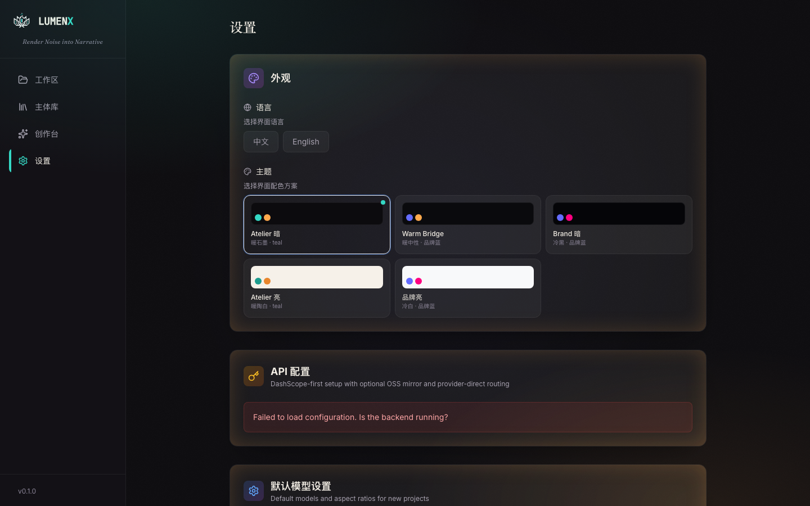
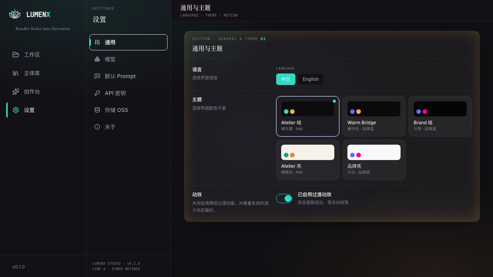
SettingsSidebar（220px，6 分类：通用 / 模型 / 默认 Prompt /
API 密钥 / 存储 OSS / 关于）+ SettingsControls（SectionCard 带 mono 数字眉标、200px 标签的
FormRow、可显隐+复制的 KeyField、Toggle、ModeSegment）。主区按分类切换，每屏只呈现一组设置，
告别盲目滚动。
改动前与你确认的 7 项决策，全部已落地。
| 编号 | 决策 | 落地结果 |
|---|---|---|
| Q1 | T2I / I2I 合并为单一图像模型选择器；阿里云 AK/SK 移入「存储 OSS」组；缓存/日志目录可发现 | 已合并——UI 单选 GroupedModelGrid，handleSaveModelDefaults 仍同时写 t2i_model / i2i_model / image_model 三字段；AK/SK 归位存储组；目录只读可复制 |
| Q2 | 新增「关于 / About」页，带 FFmpeg 检测 | 已新增——版本 / 设计线 / 后端 API / 数据目录 / 日志目录 + 实时 FFmpeg 检测（checkSystem）+ 重新检测按钮 |
| Q3 | 补齐 mock 里缺失的字段 | 已补齐——高保真还原，无 TODO 占位 |
| Q4 | 保留 Provider Mode 双按钮 + 条件 vendor 字段 | 保留——Kling / Vidu ModeSegment + 条件 KeyField，Line A form-row 样式 |
| Q5 | 本地缓存 / 数据目录 = 只读展示（不可编辑） | 只读——PathField 仅展示 + 复制 |
| Q6 | 真正把 Settings 默认值注入新建项目（修 bug） | 已修复——projectStore.createProject 创建后调用 injectDefaultsIntoProject 回灌模型/Prompt 默认；失败仅 warn 不阻断 |
| Q7 | 砍掉 FPS；新增 style_analysis + entity_extraction prompt | 已调整——后端无 FPS 概念，移除；Prompt 页扩为 5 段（实体抽取 / 风格分析 / 分镜润色 / 视频润色 / R2V 润色） |
原页所有设置项 1:1 保留；带 +NEW 为本次新增。
默认主题下的每个设置分类。注意 SECTION 数字眉标、form-row 对齐、KeyField 掩码。
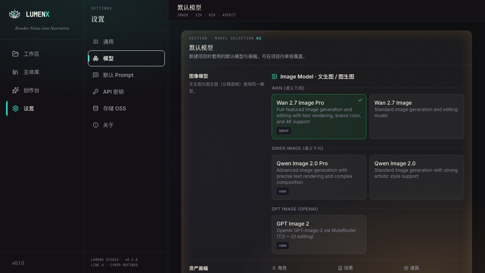
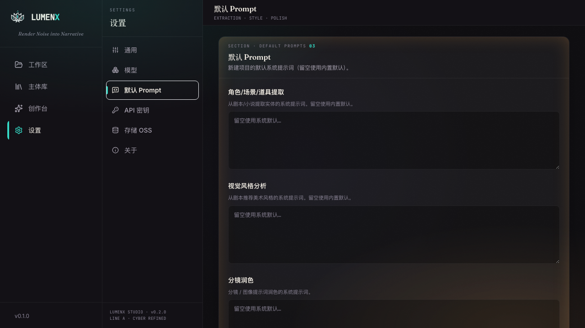
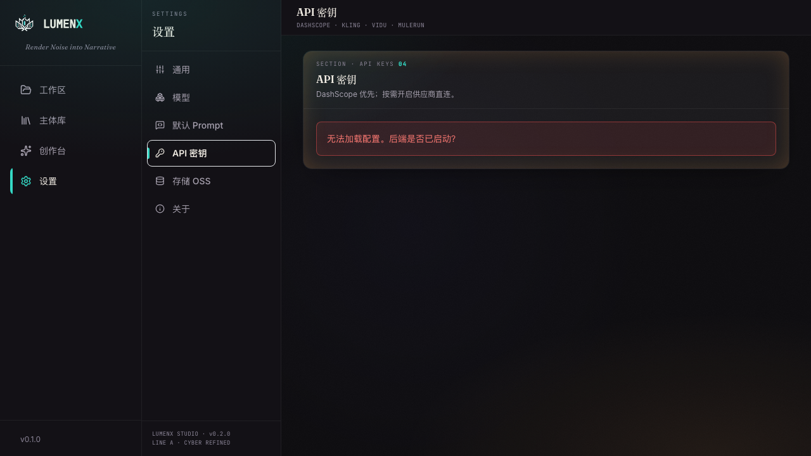
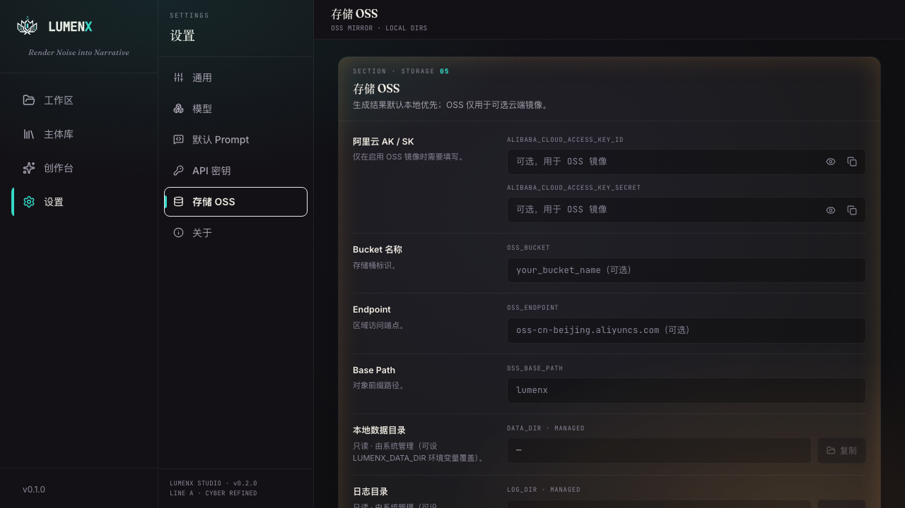
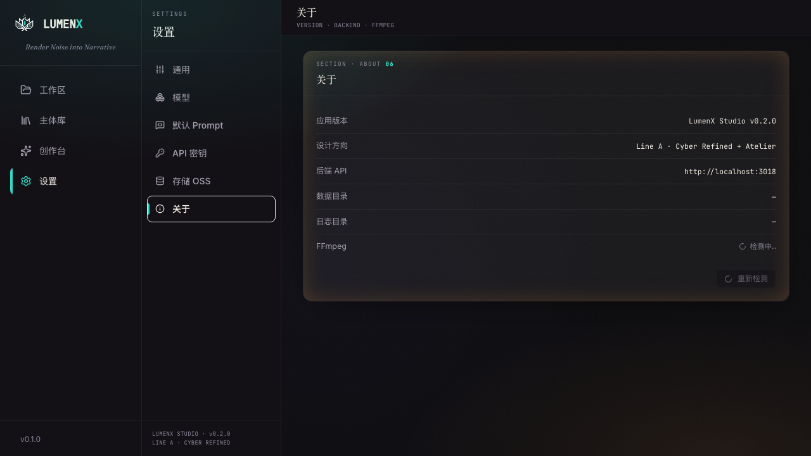
同一 IA 在 5 个预设下的呈现。左=通用，右=模型。Atelier 双主题带签名层（暖底 / 浮起卡 / 衬线 / 颗粒），其余为 Cyber 平面层。
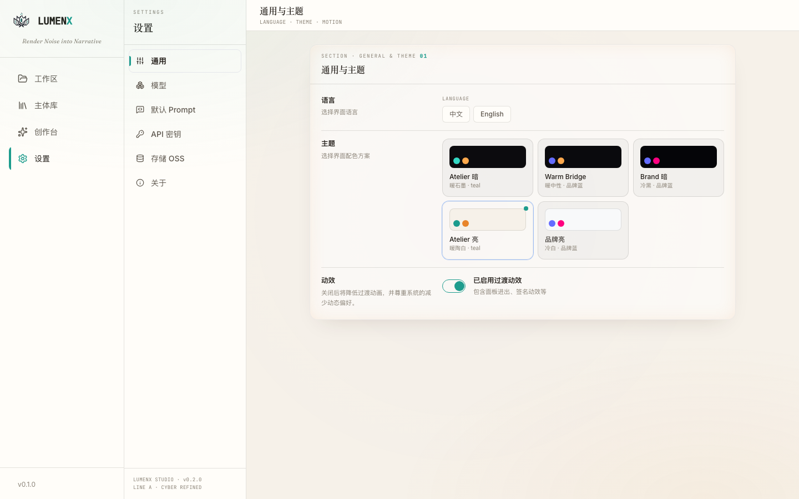
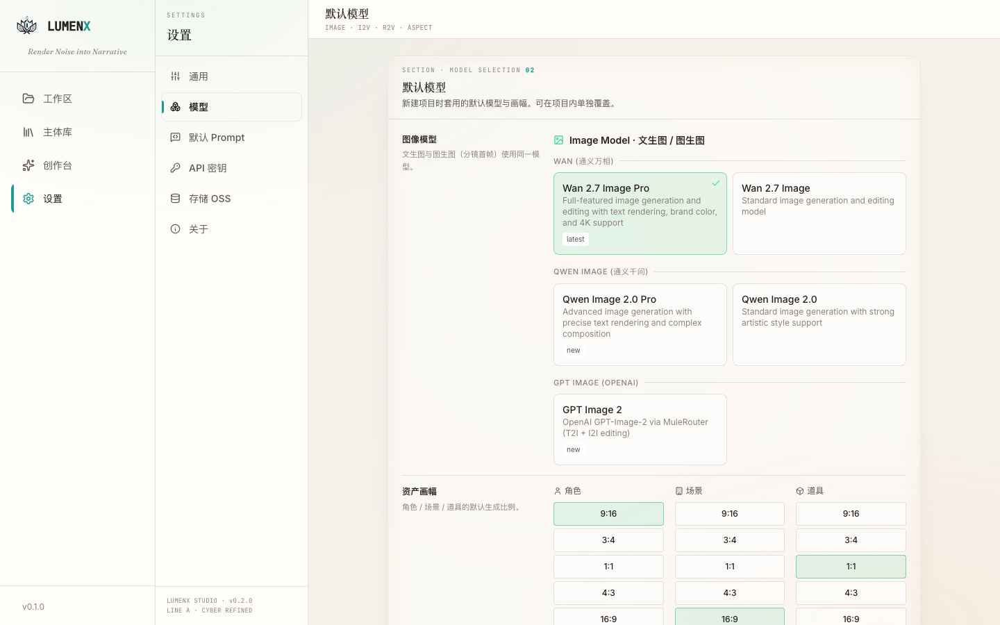
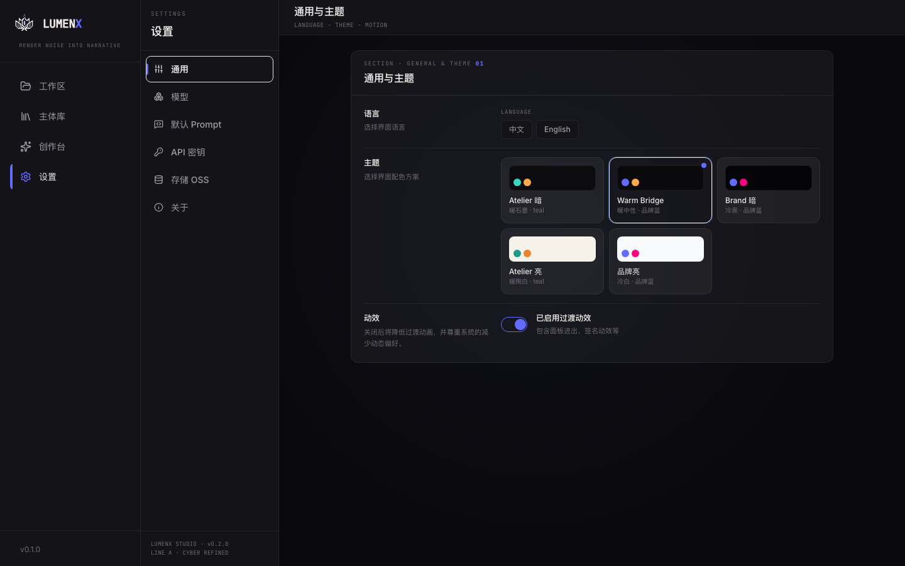
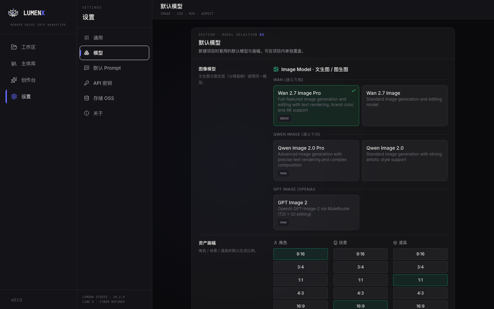
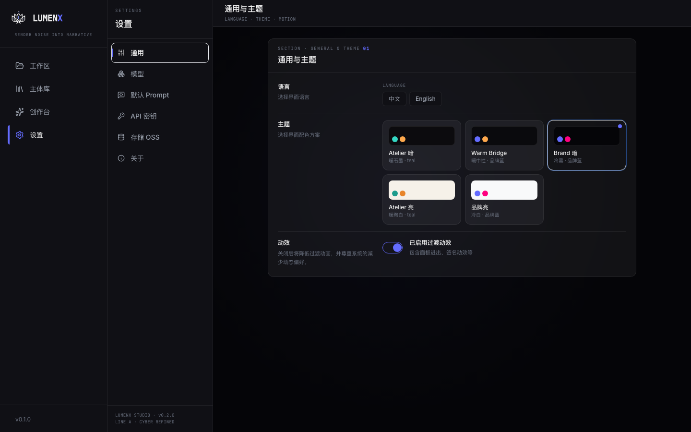
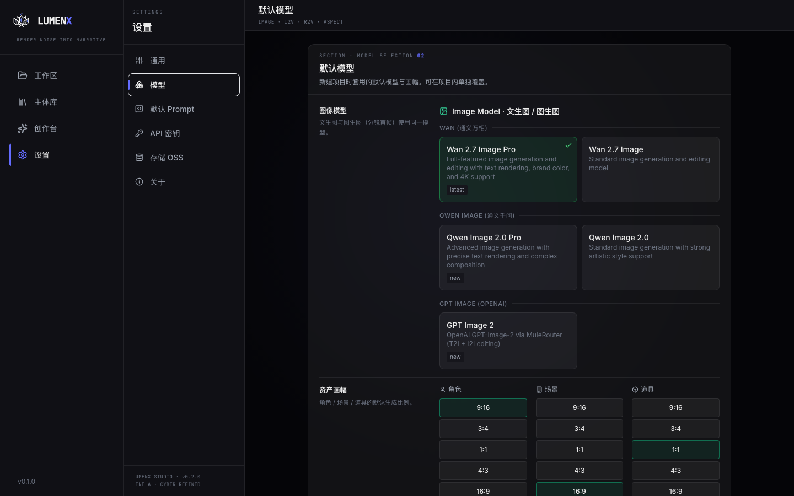
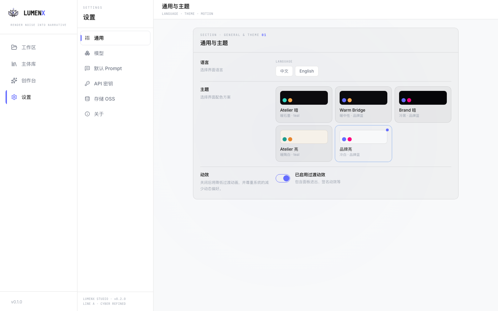
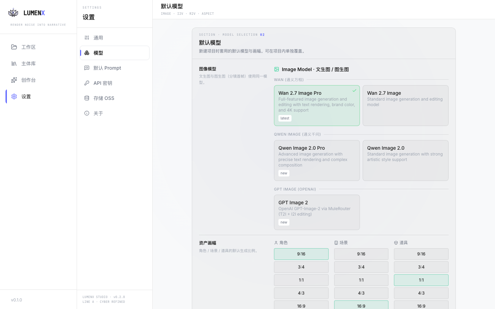
html.atelier-dark / html.atelier-light 门控，未泄漏。
| 维度 | 结果 | 说明 |
|---|---|---|
| 类型 | PASS | npm run typecheck 退出码 0，无错误 |
| 颜色 | PASS | npm run check:colors 退出码 0，全树 100% token 化，无硬编码 hex / white-alpha |
| 功能 | 视觉验证 | 6 分类 × 截图渲染正常；ModeSegment / Toggle / KeyField / 主题选择器交互结构正确 |
| 主题 | PASS | 5 预设全部切换并截图，签名门控正确 |
| 响应式 | 未覆盖 | 本轮仅在 1440×900 桌面视口验证；移动 / 平板断点未截图 |
| 后端联调 | 环境受限 | 本地后端无 DashScope key，配置加载呈 loadError 态；表单填充态需在配齐 env 的环境复验 |
| Q6 回灌 | 需 E2E | 注入逻辑已落地并通过类型检查；建议在真实后端跑一次「建项目→查项目模型设置」端到端确认 |